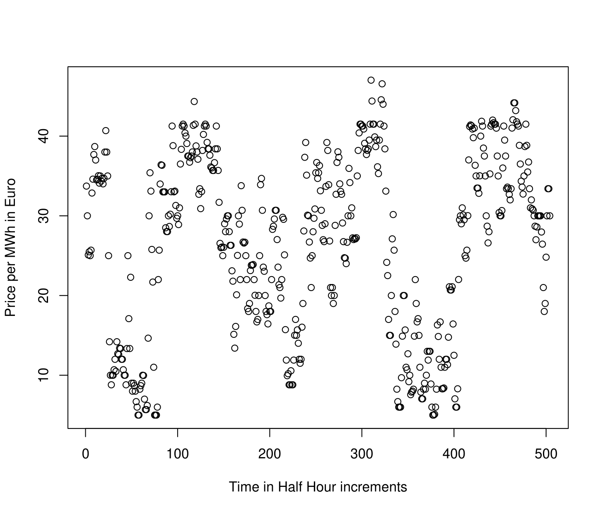
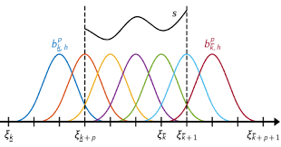
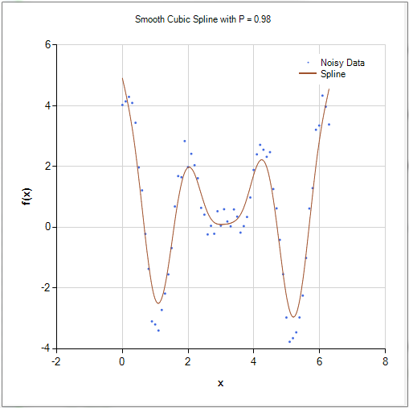
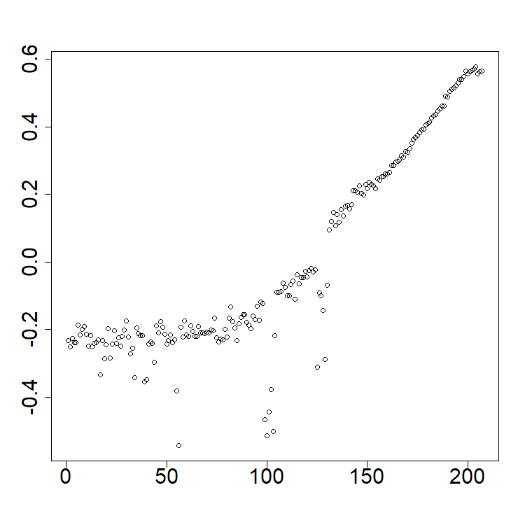

functionaldata
functionaldata.RmdFunctional Time Series Basics
Prepatory Information
The package is available on CRAN. Alternatively, the code can also be installed from GitHub as:
The data for the included exercises can be downloaded using the following code:
urlfile <- paste0(
"https://raw.githubusercontent.com/jrvanderdoes/fChange",
"/main/vignettes/articles/german_data.csv"
)
data <- utils::read.csv(urlfile)The slides can be downloaded here and a pdf of this document can be downloaded here.
Introduction
In Time Series Analysis, one considers a sequence of data observed over time. Such data can be denoted , where is the data observed at time , and describes the number of time points at which data has been obtained, also referred to as the “length" of the time series. An example of a scalar, or real-valued, time series of length is shown in the figure below. This depicts electricity spot prices in Spain obtained each hour in Euro’s per Megawatt/hour during a three week period in late spring of 2024. The ultimate goal of time series analysis is to try and make inferences about the process that generated the data. If we understand how a time series evolves, we can, for example, forecast it as well as describe how much variability there might be in future values. The time series shown in the figure below exhibits apparent daily and weekly”seasonality" or “periodicity", which we might expect in future data.

Many modern time series arise from observing a nearly continuous time process at a high frequency. Figure 1.2 shows one year’s, rather than three weeks, worth of hourly electricity spot prices in Spain from the year 2024 . There are evidently some patterns in the data, although they are somewhat difficult to see given the high frequency of the data – it is even difficult to see the expected daily and weekly periodicity in the time series.
An alternative way to view such data is as what we will call a “functional time series" (FTS). One might imagine here that each data point is an observation from an underlying”price process" , where is time in hours starting from January 1, 2024, and is the spot price at time . Since the price undergoes daily periodicity, it seems natural to segment the price process into “daily price functions" or”daily prices curves"
Of course we are not able to observe at all points . With hourly data as in Figure 1.2, we observe 24 data points for each daily function. Nonetheless, thinking of these data as being “functional" has some benefits. For instance, we might linearly interpolate the observed data to create full”daily price curves", and plot them sequentially as an alternative visualization of the data (see below). Such visualizations are shown below. There we see not only pronounced daily seasonality, but also we observe more easily weekly periodicity as well as some overall trends and changes in variability throughout the year.
electricity$labels <- format(as.Date(electricity$labels, "%Y-%m-%d"), "%b")
plot(electricity, type = "fast")
plot(electricity,
plot_title = NULL,
eye = list(x = -0.5, y = -1.5, z = 0.5),
aspectratio = list(x = 1, y = 0.6, z = 0.6)
)Such functional time series arise in many different settings. Figure 1.5 shows a functional time series constructed from one minute resolution intraday prices of an S&P500 Exchange Traded Fund and linear interpolation from the years 2019 to 2023 (). Here each curve is constructed from 390 observations and linear interpolation. Other examples include pollution in a city (Figure 1.6) and (log) mortality rates as a function of age in France (Figure 1.7).
plot(SPYUS500)
urlfile1 <- paste0(
"https://raw.githubusercontent.com/jrvanderdoes/fChange",
"/main/vignettes/articles/pollution.txt"
)
city <- utils::read.csv(urlfile1, header = TRUE, sep = ",")$x
city_dfts <- dfts(matrix(as.numeric(city), nrow = 48),
labels = paste("Day", 1:(length(city) / 48)),
season = 7
)
plot(city_dfts)The benefits of the “functional" perspective are not just limited to visualization. The models and inferential procedures that come about from thinking of such data as functional data objects are often unique, flexible, and respect the”continuous" nature of the process that generated the data. Moreover, for many data of this type we are interested in inferring, or producing predictions that are compatible with, the function properties of the process that generated the data such as “continuity" or”smoothness". These natural concepts are unique to functions and are not easily handled solely within a multivariate framework.
The goal of this short course is to introduce functional time series,
and discuss some tools for analyzing them in R.
Function Spaces and
From a theoretical perspective we think of a time series as being a
realization of length
from a discretely indexed stochastic process. In other words,
when we observe a real valued time series
,
we assume that it came from observing a partial stretch of length
from a stochastic process
,
where
.
Multivariate or vector valued time series are of the
form ${\bf X}_1,...,{\bf X}_T$ where
${\bf X}_i \in \mathbb{R}^d$, and may
be similarly viewed as arising from observing a stochastic process $\{{\bf X}_i \in \mathbb{R}^d, \; i\in
\mathbb{Z}\}$.
When we think of data as being “functional" in nature, we think of them
as taking their values in some space of functions rather than in
.
When functional data are defined over a compact interval, for instance
as in the electricity spot price curve example, it is natural to view
them as functions
For functions defined over a compact interval it makes sense for the
sake of simplicity to assume, by applying a linear transformation to the
input, that the function is defined over the interval
.
What are reasonable classes of functions might take its value in? Some “famous" spaces of functions are the space of continuous functions or the space of square integrable functions Another important example is”Sobolev Space", which takes into consideration the derivatives of the function. An example of a Sobolev space involving the first derivative is It is worth noting that each of these spaces are “infinite dimensional", and so viewing data as residing in these spaces is a significant departure from the finite dimensional setting of .
Definition: For a given function space , e.g. any of the above three examples, a functional time series (FTS) is an observed stretch of data of length of a function-valued stochastic process .
The choice of space that we view the data as residing in is consequential in that it suggests how we might measure distance between functions. The canonical distance measure, or norm, on is On , we usually measure distance using
What ends up being a critical distinction between these two spaces and their canonical distance measures is that the space with distance measure is a separable Hilbert Space, whereas the space with distance measure (or even with distance ) is not a separable Hilbert space. In addition to the mathematical properties of linearity and completeness, Hilbert spaces also have the nice property that their distance measure is generated by an inner product. The canonical inner product on is Evidently . The existence of an inner product means that the space has a similar “geometry" to a finite dimensional space — the inner product defines angles between functions and further the notion of”orthogonality".
Separability in this setting is equivalent to the existence of a complete orthonormal system (CONS) of basis functions , satisfying the properties 1) , i.e. the functions are orthogonal and have norm one, and 2) for any ,
Here equality is understood in the sense, which means that the norm of the difference between the left and right hand sides of the above is zero.
The equation on CONS, in addition to the geometry introduced by the inner product, means that the space is “close" in a sense to . If for instance we were ever able to make the simplification the right hand side of the above is characterized by , and we would be in more familiar territory. This line of reasoning suggests that an important step in functional data and FTS analysis is performing effective dimension reduction.
Throughout these notes we generally consider FTS that we think of as taking value in . We conclude this section with a couple of remarks.
Remark: An important result of analysis is that all infinite dimensional, separable Hilbert spaces are “isometrically isomorphic". This means that for any separable Hilbert spaces and with respective norms and , there exists a bijection so that for all , . As a result all separable Hilbert spaces are in a sense equivalent to — any data residing in another separable Hilbert space can be mapped to in such a way that distances remain the same. Many important spaces in applications, for example the Sobolev space mentioned above, may be fashioned into separable Hilbert spaces, and so in a sense considering methods to analyze data in has broad implications for analyzing many types of functional data.
Remark: Analyzing FTS when we think of the data as being elements of a more general Banach space, e.g. , poses some significant challenges from a theoretical perspective. Many problems remain open in this area.
Preprocessing FTS
In most cases in which FTS analysis is applied (but not all!), the observed data are discrete measurements of an underlying process that is indexed by a continuous domain. For example, the spot price electricity data previously visualized we can view as being indexed on the continuous interval , although with hourly data we only observe each daily function on the points . The first step in FTS is often to complete these data to full curves using “interpolation" or”smoothing" techniques. Good resources for this material are (J. Ramsay, Hooker, and Graves 2009) and (J. O. Ramsay and Silverman 2005).
Such raw data can often be represented as
One very simple way to complete such data to a full curve is using linear interpolation. We simply define a function so that for any such that , Evidently the linearly interpolated curve will agree with at each . This is an effective approach when the raw data are thought to be observed without measurement error from an approximately continuous underlying process, and are “dense" in the sense that the is large and the are distributed approximately uniformly in the interval .
When we view the underlying curve as a function in , another natural approach to complete such data to a full curve is to take advantage of CONS and construct for each $$\begin{aligned} \hat{X}_i(t) = \sum_{j=1}^{K} c_i \phi_j(t) = {\bf c}^\top {\bf \Phi}(t), \end{aligned}$$ where the is a CONS, is a user-specified parameter, ${\bf c} = (c_1,....,c_K)^\top$ and ${\bf \Phi}(t) = (\phi_1(t),...,\phi_K(t))^\top$. The user in this typically specifies the basis functions along with the integer , and then the vector of coefficients ${\bf c}$ is chosen using some optimization procedure. Two popular choices for the basis functions are the standard Fourier basis, which are functions of the form and the bases of orthogonal B-spline polynomials. A plot of cubic B-spline polynomials based on equally spaced knots is shown in the figure below.

While a detailed explanation of spline interpolation/smoothing is beyond the scope of this short course, we mention that this method came about as a way to smooth or interpolate raw data in such a way that the resulting curve maintains certain differentiability properties.
One often considers the nature of the data and the goals of subsequent analysis when choosing a basis. For data that his highly periodic it might make sense to smooth/interpolate it using a Fourier basis, while a spline basis might be more appropriate for less structured data that we think may have been drawn from an underlying continuous or differentiable function. Given the flexibility (pun intended) of cubic-spline smoothing, it is often used as a default.

After choosing a basis, we still must select and the coefficient vector ${\bf c}$ in the equation. This is typically done using least squares: we choose ${\bf c}$ and to minimize $$\mbox{SSE}_{i,K}({\bf c}) = \sum_{j=1}^{n_i}[X_i(t_{i,j}) - {\bf c}^\top{\bf \Phi}(t_{i,j})]^2.$$ Here if , the sum of squared errors can be minimized at $SSE_{i,K}({\bf c})=0$, so that the data are “interpolated", i.e. the function attains the same values as the observed data at the points . This is sometimes desirable, for example if the raw functional data is thought to be observed without additional observational error. In some cases though this leads to evident”overfitting". In these cases it can make sense to additionally penalize the “complexity" or”roughness" of the function . Although this can be done in many ways, a natural choice is to measure the roughness of the function using a “second derivative penalty" $$\mbox{PEN}_{i,K}({\bf c}) = \int_{0}^{1} \left[ \frac{d^2}{dt^2} {\bf c}^\top {\bf \Phi}(t) \right]^2 dt,$$ and then choose ${\bf c}$ to minimize $$\mbox{SSE}_{i,K}({\bf c}) + \lambda \mbox{PEN}_{i,K}({\bf c}),$$ for a tuning parameter . Large forces the function to be less rough, whereas small leads to a function that more closely interpolates the data. Often is selected using leave-one-out cross-validation, or using the”eye-ball test"— we try several until the resulting curve “looks good".
Using either of these methods, we can complete the raw data to full curves which we can relabel back to . Often practically once we have created such curves we will re-valuate them at some, often dense, grid of equally spaced points for subsequent analyses and storage as an array.
Suppose that the Spanish electricity data was collected between 20 and 40 times a day, at potentially different points of time. Such data could be fit using a B-spline basis and evaluated such that each curve is evaluated at the same time each day. Different values for can result in drastically different discrete evaluations; see Figures below. In practice, organizing data such that each day is observed at the same time points is computationally valuable.
urlfile3 <- paste0(
"https://raw.githubusercontent.com/jrvanderdoes/fChange",
"/main/vignettes/articles/uneven_spanish.rds"
)
uneven_spanish <- readRDS(url(urlfile3, "rb"))
eval_pts <- seq(0, 1, length.out = 24)
elec_eval <- data.frame(matrix(nrow = 24, ncol = length(uneven_spanish)))
long_data <- data.frame()
for (i in 1:length(uneven_spanish)) {
long_data <-
rbind(
long_data,
data.frame(
"x" = i + 0:(length(uneven_spanish[[i]]$values) - 1) /
length(uneven_spanish[[i]]$values),
"y" = uneven_spanish[[i]]$values
)
)
fda_fit <- fda::Data2fd(uneven_spanish[[i]]$pts, uneven_spanish[[i]]$values,
basisobj = fda::create.bspline.basis(nbasis = 24),
lambda = 1
) # ,
# lambda = .0001)
elec_eval[, i] <- fda::eval.fd(eval_pts, fda_fit)
}
colnames(elec_eval) <- seq.Date(from = as.Date("2014-01-01"), to = as.Date("2014-12-31"), by = 1) # electricity$labels
spanish_electricity <-
dfts(elec_eval,
labels = format(as.Date(colnames(elec_eval), "%Y-%m-%d"), "%b")
)
plot(spanish_electricity,
plot_title = NULL,
eye = list(x = -1, y = -1.5, z = 0.75),
aspectratio = list(x = 0.8, y = 0.6, z = 0.6)
)
urlfile3 <- paste0(
"https://raw.githubusercontent.com/jrvanderdoes/fChange",
"/main/vignettes/articles/uneven_spanish.rds"
)
uneven_spanish <- readRDS(url(urlfile3, "rb"))
eval_pts <- seq(0, 1, length.out = 24)
elec_eval <- data.frame(matrix(nrow = 24, ncol = length(uneven_spanish)))
long_data <- data.frame()
for (i in 1:length(uneven_spanish)) {
long_data <-
rbind(
long_data,
data.frame(
"x" = i + 0:(length(uneven_spanish[[i]]$values) - 1) /
length(uneven_spanish[[i]]$values),
"y" = uneven_spanish[[i]]$values
)
)
fda_fit <- fda::Data2fd(uneven_spanish[[i]]$pts, uneven_spanish[[i]]$values,
basisobj = fda::create.bspline.basis(nbasis = 24),
lambda = 0.0001
)
elec_eval[, i] <- fda::eval.fd(eval_pts, fda_fit)
}
colnames(elec_eval) <- seq.Date(from = as.Date("2014-01-01"), to = as.Date("2014-12-31"), by = 1) # electricity$labels
spanish_electricity <-
dfts(elec_eval,
labels = format(as.Date(colnames(elec_eval), "%Y-%m-%d"), "%b")
)
plot(spanish_electricity,
plot_title = NULL,
eye = list(x = -1, y = -1.5, z = 0.75),
aspectratio = list(x = 0.8, y = 0.6, z = 0.6)
)Visualizing FTS
After potentially pre-processing the data, it is often useful to plot the FTS to inspect for trends and gauge the overall behavior of the series. One way to do this is with what is called a rainbow spaghetti plot. In such a plot, curves are rendered in three dimensions, with one axis denoting “discrete time" , , one axis measuring the”functional parameter" , and the vertical axis measuring the real value . Curves are initially plotted in red, and then progress through the rainbow color spectrum to violet for the final curves.
The functional plots included to this point have been rainbow
spaghetti plots, and are interactive in R. However, there
are many possible visualizations for functional data. Two other
visualizations of the (log) French mortality rates are shown in below.
The first is not interactive and runs much faster. Hence, it is
well-employed for larger FTS. The second is called a rainbow plot and
stacks the observations to highlight major shifts.

plot(fmort, type = "fast")
plot(fmort, type = "rainbow")Mean, covariance, and principal component analysis
When beginning to analyze an FTS, we often consider computing some summary values and performing dimension reduction. Many of these tasks are carried out by thinking of the FTS as being stationary.
Definition: An FTS is (strictly) stationary if for each , and , and all (Borel) subsets ,
Roughly speaking a time series is stationary if its stochastic properties are the same no matter where we look at the series. This would imply for example that each curve has the same distribution, and further that each pair of curves have the same joint distribution for each . Of course with most real time series this assumption is clearly invalid, and we discuss statistical tests of this assumption in Chapter 3, however the resulting summaries and dimension reduction methods are often still useful even when analyzing non-stationary time series.
For a stationary FTS the mean function of the series is We typically estimate the mean function using the sample mean function
The covariance operator of a stationary FTS is defined by and is well defined so long as The covariance operator is also characterized by the covariance kernel via the relation
In a sense the covariance kernel takes the place of the “covariance matrix", and the covariance operator is akin to using such a matrix to define a linear operator on the space.
These quantities are most commonly estimated using the empirical covariance kernel and the empirical covariance operator The eigenfunctions of , denoted by , are often called the functional principal components (FPCs), i.e. . These functions are orthogonal and define a CONS of . As such they may be used to decompose the FTS as in the CONS equation. This turns out to be a somewhat special expansion for a stationary FTS called the Karhunen–Loéve (KL) expansion. It takes the form The scores satisfy , , for .
This KL expansion is “optimal" in the following sense: if we consider the truncated expansion for any positive integer , this”finite dimensional" representation of is optimal in that it minimizes the mean squared-normed error among all possible choices of the functions in the equation.
Expansion is not directly accessible because and the are unknown population parameters, but can be replaced with their empirical counterparts. In particular the FPCs and the eigenvalues are estimated by and defined as the solutions to the equations
Each curve can then be approximated by a linear combination of a finite set of the estimated FPCs , i.e. where the are the sample scores. Each quantifies the contribution of the curve to the shape of the curve . Thus, the vector of the sample scores, encodes the shape of to a good approximation.
When using this dimension reduction we must select . This is most commonly done using the Total Variation Explained (TVE) approach: we choose so that the percentage is sufficiently large. For example a common criterion is to choose In many examples this leads to a reasonably small value of . Tuning the threshold for selecting and analyzing the effects this has on any conclusion drawn from the data is almost always something worth considering.
# May want to review the comment figure
# plot(fmort, type='rainbow')
pca_data <- pca(fmort, TVE = 0.95)
plot(pca_data$center)
pca_data$skree$comb_skreeWe again return the French mortality data. The mean of the observations is shown as the thick gray line in the rainbow plot. This mean is used to center the data for PCA. Although the data is observed at 101 points each year for 207 years, only components are needed to explain 95% of the total variation; see skree plot. The first two PCs are also shown with the related coefficients.
plot(pca_data$rotation[, 1], xlab = NA, ylab = NA, cex.axis = 2, type = "l", lwd = 2)
plot(pca_data$rotation[, 2], xlab = NA, ylab = NA, cex.axis = 2, type = "l", lwd = 2)```{r eval=FALSE}
plot(pca_data$x[, 1], xlab = NA, ylab = NA, cex.axis = 2)
plot(pca_data$x[, 2], xlab = NA, ylab = NA, cex.axis = 2)Exercises
The data for these exercises can be downloaded as given at the start of this document. These data comprise electricity spot prices in Germany:
Coerce the data into a dfts object and plot the raw data.
Turn the data into functional data objects using b-spline smoothing and Fourier basis smoothing. Try different values of the smoothing parameter and observe the results.
Compute the mean and first three functional principal components. Compute a scree plot for this data; how many principal components are needed to explain 95% of the total variation of the data?
Forecasting functional time series
Suppose that we are given a functional time series (FTS) , which we have perhaps obtained after applying pre-processing as introduced in Section 1.3. In this chapter we study methods to forecast the time series steps ahead, or in other words predict the curve , as well as quantify the uncertainty in such a forecast.
The Hyndman-Ullah method
Although many methods have been introduced in the last approximately 20 years to forecast FTS, we will focus in this short course on the “Hyndman-Ullah" method (Hyndman and Ullah 2007). The idea behind this method is simple — if we suppose that the underlying curves may be well-approximated by their projection onto the first eigenfunctions of the covariance operator , so that then the time dynamics of the series are characterized by the scalar time series Forecasts for may then be reduced to forecasting these scalar time series. Forecasting scalar time series is of course a very well understood problem, and there are a host of methods that can be used to produce forecasts of , which we denote . This leads to the forecast of .
Such forecasts are quite hard to interpret alone without some quantification of the uncertainty we expect in them. A simple way quantify the uncertainty in the forecast is to employ simulation. Many methods to produce forecasts of the component series are “model based", and readily lend themselves to simulating potential future values , for . Here is a user-specified large value that defines how many simulated future curves we produce. Using simulations of the component series, we may simulate the FTS as
By examining the variability of these simulated curves, we can get an idea of how much variability we might expect of future curves as well as how much they might deviate from the forecasted curve. For example, a pointwise in 95% prediction interval for is constructed as where is the sample quantile of .
Remark: We note that a model that takes into account the “dimension reduction error" in HU is where is a”functional residual" By taking large (or equivalently taking the TVE to be large in the PCA dimension reduction), can be made smaller. Often though because it requires a more complex models of the component series we may not wish to take too large, and so may be non-negligible. In order to incorporate this into the uncertainty quantification of the forecast, we can compute simulated curves as where is an iid draw from the residuals
Remark: Often when we simulate the component series , we do this independently across the series. Whether this is reasonable to do is often unclear. When the component series are constructed using PCA, the series are marginally uncorrelated, although can exhibit complex temporal dependency structures.
Forecasting the component series
The Hyndman–Ullah method relies on forecasting the
scalar series
.
We now discuss two simple and automated methods to do so in
R. Further summaries of these models can be found in (Hyndman and Khandakar 2008).
SARIMA and the autoarima model
ARIMA models, and their seasonal versions, have been a mainstay of time series analysis since the seminal work of Box and Jenkins (Box and Jenkins 1970). These models assume that the underlying scalar time series of interest is in essence a linear function of a strong white noise sequence.
Definition: We say , is a strong white noise if it is a sequence of mean zero, independent, and identically distributed random variables with finite variance.
The backshift operator is denoted by , and is defined by
Two guiding examples to consider in forecasting are the “strong white noise model", and the”random walk model" .
In the case of the first model, the best predictor of given past values of the series is the mean value , which can be estimated from by the sample mean . The second model on the other hand can be rewritten as which makes clear that the best forecast for based on in this case is . The second model is also called an “integrated model", since the differenced values of the times series are a white noise and can be added (integrated) up to recover the original series. ARIMA models in essence choose between these two models while also allowing for additional serial correlation in the series.
Given a white noise sequence , a moving average process of order (MA()) is of the form where An AutoRegressive process of order , denoted , is defined by We define the autoregressive polynomial as so the AR(p) process is characterized by An ARMA (autoregressive moving average) model is of the form
Definition: is said to follow an SARIMA (Seasonal Autoregressive Integrated Moving Average) model of orders , , , ,, and seasonal period if This is abbreviated .
The seasonal period is typically supplied by the practitioner and is
often chosen to match the predominant “seasonality" or”periodicity" in
the series. For instance with daily data
might be used to model weekly seasonality. This is typically achieved in
R by specifying the frequency parameter of at
time series object.
Here we use the function auto.arima from the
forecast and fpp2 packages in R
to select and fit such models. This function first selects the
differencing degrees
and
via applying a KPSS stationarity (Kwiatkowski et
al. 1992) test to the time series
and
.
The ARMA orders
and
are selected using the AIC information criterion, and the model
parameters are estimated via maximum likelihood estimation assuming the
model errors
are Gaussian.
We note that by simulating the error process and iterating the recursion for in SARIMA, we can simulate approximate future values of the series .
Exponential Smoothing and the ets model
Exponential smoothing was introduced in the late 1950’s. The basic principle behind exponential smoothing is that for a time series , two extreme forecasts are again
We notice that both of these forecasts are weighted linear combinations
of the past values of the series
:
the random walk model puts full weight on
,
whereas the iid noise model puts even weights
on each value.
For general time series the optimal prediction might fall between these
extremes. Exponential smoothing models generally suppose that these
weights decay geometrically.
Simple Exponential Smoothing: We forecast
with
.
This prediction may be restated as:
Here and are the scalar parameters defining this prediction, and can be estimated via least squares:
Linear Trend Exponential Smoothing: In order to make a forecast steps ahead, we extrapolate the trend linearly as follows: Scalar Parameters: can once again be estimated using least squares.
Trend+Seasonal Exponential Smoothing (Holt-Winters ES): If a time series exhibits seasonality at period , then we incorporate it into the forecast as follows. Letting , Scalar Parameters: can be estimated using least squares.
We note that each of these models may be rewritten in what is called “state-space" or”innovations" form. For example, the simple exponential smoothing model may be rewritten as: where is an innovation sequence representing the residuals . By assuming for instance that these residuals are Gaussian, one can once again easily simulate future values of the series as well as conduct model selection using information criteria such as AIC.
The ets() function from the fpp2 package in
R fits such exponential smoothing models using least
squares and conducting model selection between standard, linear trend,
and seasonal/Holt-Winters models using AIC. We note this function also
chooses among “multiplicative seasonality" versions of the same models.
A multiplicative Holt-Winters model for a non-negative time series can
be more appropriate if the seasonal/periodic fluctuations of the series
increase (or decrease) as a function of the level of the series.
Time Series Cross-Validation
A useful tool choosing between such models is to use time series cross-validation. Suppose we wish to evaluate the quality of a model choice . For example, we might wish to compare SARIMA and Exponential smoothing to produce forecasts. We proceed as follows:
Select training, validation, and testing ranges, , e.g. of the data. Note: In forecasting applications we often forego the testing set and just use training and validation sets.
For , forecast based on the curves using model , or if we are interested in horizon forecasting forecast . Calculate losses or
A CV loss score for the model can be taken as Small values of suggest better performance.
This type of time series cross-validation is often called “expanding window" cross-validation, since we forecast at each stage using all of the previous data . A schematic of how this works is shown in Figure 2.1.

Examples
Electricity Prices
Suppose that the goal was to forecast the electricity prices shown previously for the next month. It is natural to assume this data has weekly seasonality due to the typical work schedule. Using PCA as discussed in Section 1, PCs can be used to explain over 99% of the variation in the data. Figures below show forecasts for the first two PCs and the entire electricity data using ets and arima Hyndman-Ullah models. Although differentiating the models visualizing is difficult, one-step CV one the last 20% of the data gives MSE estimates of approximately 2280 (ets) and 2522 (arima), suggesting the use of an ets model gives about a 10% improvement.
elec_ets <- projection_model(
X = electricity, forecast.model = "ets", TVE = 0.99,
n.ahead = 14, check.cp = F, alpha = 0.05,
sim.bounds = TRUE, M = 1000
)
elec_arima <- projection_model(
X = electricity, forecast.model = "arima", TVE = 0.99,
n.ahead = 14, check.cp = F, alpha = 0.05,
sim.bounds = TRUE, M = 1000
)
# CV
pred_idx <- floor(0.8 * ncol(electricity) + 1):ncol(electricity)
errors <- matrix(NA, nrow = length(pred_idx), ncol = 2)
colnames(errors) <- c("fets", "farima")
cat("CV (", length(pred_idx), "):")
for (i in 1:length(pred_idx)) {
cat(i, ", ")
idx <- pred_idx[i]
tmp_dat <- electricity[, 1:(idx - 1)]
tmp_dat$season <- 7
tmp_pred <- electricity[idx]
tmp_pred$season <- 7
pm1 <- projection_model(tmp_dat,
forecast.model = "ets", n.ahead = 1,
check.cp = F, sim.bounds = F
)
pm2 <- projection_model(tmp_dat,
forecast.model = "arima", n.ahead = 1,
check.cp = F, sim.bounds = F
)
ests <- data.frame(
"fets" = as.numeric(
pm1$data$component_true$data[, idx]
),
"farima" = as.numeric(
pm2$data$component_true$data[, idx]
)
)
errors[i, ] <- colSums((ests - tmp_pred$data)^2)
}
colMeans(errors) / min(colMeans(errors))
# fets farima
# 1.000 1.106
elec_ets$plots$components$`Component 1`
elec_ets$plots$components$`Component 2`
elec_ets$plots$forecast_plot
elec_arima$plots$components$`Component 1`
elec_arima$plots$components$`Component 2`
elec_arima$plots$forecast_plotIt may also make sense to transform the data. This can be done
manually or using a currently under development parameter
transformation as shown below.
fit <- projection_model(electricity, check.cp = FALSE, n.ahead = 14)
fit_log <- projection_model(electricity,
transformation = "log", check.cp = FALSE,
n.ahead = 14
)
fit_sqrt <- projection_model(electricity,
transformation = "sqrt", check.cp = FALSE,
n.ahead = 14
)
# With fitted data
fit$plots$fit_plot
fit_log$plots$fit_plot
fit_sqrt$plots$fit_plot
# With original data
fit$plots$forecast_plot
fit_log$plots$forecast_plot
fit_sqrt$plots$forecast_plotRunning CV with log and sqrt root data, returns the following results: 1.000 (fets), 1.106 (farima), 1.460 (log fets), 1.367 (log farima), 1.119 (sqrt fets), and 1.153 (sqrt fets).
# CV with all
pred_idx <- floor(0.8 * ncol(electricity) + 1):ncol(electricity)
errors <- matrix(NA, nrow = length(pred_idx), ncol = 6)
colnames(errors) <- c("fets", "farima", "fetsLog", "farimaLog", "fetsSqrt", "farimaSqrt")
cat("CV (", length(pred_idx), "):")
for (i in 1:length(pred_idx)) {
cat(i, ", ")
idx <- pred_idx[i]
tmp_dat <- electricity[, 1:(idx - 1)]
tmp_dat$season <- 7
tmp_pred <- electricity[idx]
tmp_pred$season <- 7
pm1 <- projection_model(tmp_dat,
forecast.model = "ets", n.ahead = 1,
check.cp = F, sim.bounds = F
)
pm2 <- projection_model(tmp_dat,
forecast.model = "arima", n.ahead = 1,
check.cp = F, sim.bounds = F
)
pm3 <- projection_model(tmp_dat,
forecast.model = "ets", n.ahead = 1,
check.cp = F, sim.bounds = F, transformation = "log"
)
pm4 <- projection_model(tmp_dat,
forecast.model = "arima", n.ahead = 1,
check.cp = F, sim.bounds = F, transformation = "log"
)
pm5 <- projection_model(tmp_dat,
forecast.model = "ets", n.ahead = 1,
check.cp = F, sim.bounds = F, transformation = "sqrt"
)
pm6 <- projection_model(tmp_dat,
forecast.model = "arima", n.ahead = 1,
check.cp = F, sim.bounds = F, transformation = "sqrt"
)
ests <- data.frame(
"fets" = as.numeric(
pm1$data$component_true$data[, idx]
),
"farima" = as.numeric(
pm2$data$component_true$data[, idx]
),
"fetsLog" = as.numeric(
pm3$data$component_true$data[, idx]
),
"farimaLog" = as.numeric(
pm4$data$component_true$data[, idx]
),
"fetsSqrt" = as.numeric(
pm5$data$component_true$data[, idx]
),
"farimaSqrt" = as.numeric(
pm6$data$component_true$data[, idx]
)
)
errors[i, ] <- colSums((ests - tmp_pred$data)^2)
}
colMeans(errors) / min(colMeans(errors))
# fets farima fetsLog farimaLog fetsSqrt farimaSqrt
# 1.000 1.106 1.460 1.367 1.119 1.153Pollution
Consider the pollution data. This time we will compare a functional approach to traditional methods. CV with day forecasts are used. Scaled CV results were: 1.101 (arima), 2.453 (ets), 1.450 (fets), 1.000 (farima), 1.271 (log fets), and 1.031 (log arima).
# Forecast horizon: 7 days * 48 half hours = 336 pts
h <- 7
# CV
pred_idx <- ncol(city_dfts) - 13:7
errors <- matrix(NA, nrow = length(pred_idx), ncol = 6)
colnames(errors) <- c("arima", "ets", "fets", "farima", "fets_log", "farima_log")
cat("CV (", length(pred_idx), "):")
for (i in 1:length(pred_idx)) {
cat(i, ", ")
tmp_dat <- city_dfts[, 1:pred_idx[i]]
tmp_dat$season <- 7
tmp_scalar <- ts(as.vector(tmp_dat$data), frequency = 7)
tmp_pred <- city_dfts[, pred_idx[i] + 1:7]
scalar_arima <- forecast::auto.arima(tmp_scalar)
arima_for <- forecast::forecast(scalar_arima, h = h * 48, level = 95)
scalar_ets <- forecast::ets(tmp_scalar)
ets_for <- forecast::forecast(scalar_ets, h = h * 48, level = 95)
pm1 <- projection_model(tmp_dat,
forecast.model = "ets", n.ahead = h,
check.cp = F, sim.bounds = F
)
pm2 <- projection_model(tmp_dat,
forecast.model = "arima", n.ahead = h,
check.cp = F, sim.bounds = F
)
pm3 <- projection_model(tmp_dat,
forecast.model = "ets", n.ahead = h,
check.cp = F, sim.bounds = F, transformation = "log"
)
pm4 <- projection_model(tmp_dat,
forecast.model = "arima", n.ahead = h,
check.cp = F, sim.bounds = F, transformation = "log"
)
ests <- data.frame(
"arima" = arima_for$mean,
"ets" = ets_for$mean,
"fets" = as.numeric(
pm1$data$component_true$data[, (ncol(tmp_dat) + 1):ncol(pm1$data$component_true)]
),
"farima" = as.numeric(
pm2$data$component_true$data[, (ncol(tmp_dat) + 1):ncol(pm2$data$component_true)]
),
"fetsL" = as.numeric(
pm3$data$component_true$data[, (ncol(tmp_dat) + 1):ncol(pm3$data$component_true)]
),
"farimaL" = as.numeric(
pm4$data$component_true$data[, (ncol(tmp_dat) + 1):ncol(pm4$data$component_true)]
)
)
errors[i, ] <- colSums((ests - as.vector(tmp_pred$data))^2)
}
colMeans(errors) / min(colMeans(errors))
# arima ets fets farima fets_log farima_log
# 1.101 2.453 1.196 1.000 1.271 1.031In this case, we know the true errors. When forecasting and comparing to the truth for the next week, similar results are seen: 1.376 (arima), 1.601 (ets), 1.450 (fets), 1.000 (farima), 1.866 (log fets), and 1.073 (log arima). It is clear arima models are better choices than ets for the pollution.
# Results
tmp_scalar <- ts(as.vector(city_dfts$data), frequency = 7)
scalar_arima <- forecast::auto.arima(tmp_scalar)
arima_for <- forecast::forecast(scalar_arima, h = h * 48, level = 95)
scalar_ets <- forecast::ets(tmp_scalar)
ets_for <- forecast::forecast(scalar_ets, h = h * 48, level = 95)
pm1 <- projection_model(city_dfts,
forecast.model = "ets", n.ahead = h,
check.cp = F, sim.bounds = F
)
pm2 <- projection_model(city_dfts,
forecast.model = "arima", n.ahead = h,
check.cp = F, sim.bounds = F
)
pm3 <- projection_model(city_dfts,
forecast.model = "ets", n.ahead = h,
check.cp = F, sim.bounds = F, transformation = "log"
)
pm4 <- projection_model(city_dfts,
forecast.model = "arima", n.ahead = h,
check.cp = F, sim.bounds = F, transformation = "log"
)
ests_final <- data.frame(
"arima" = arima_for$mean,
"ets" = ets_for$mean,
"fets" = as.numeric(
pm1$data$component_true$data[, (ncol(city_dfts) + 1):ncol(pm1$data$component_true)]
),
"farima" = as.numeric(
pm2$data$component_true$data[, (ncol(city_dfts) + 1):ncol(pm2$data$component_true)]
),
"fets7" = as.numeric(
pm3$data$component_true$data[, (ncol(city_dfts) + 1):ncol(pm3$data$component_true)]
),
"farima7" = as.numeric(
pm4$data$component_true$data[, (ncol(city_dfts) + 1):ncol(pm4$data$component_true)]
)
)
true <- utils::read.csv(
paste0("C:/Users/jerem/OneDrive/Documents/School/Waterloo/Research/RPackages/fChange/vignettes/articles/pollution_true.txt")
)[, 2]
res <- colSums((ests_final - true)^2)
res / min(res)
# arima ets fets farima fets_log farima_log
# 1.376 1.601 1.450 1.000 1.866 1.073
mod <- projection_model(city_dfts,
forecast.model = "arima", n.ahead = h,
check.cp = F, sim.bounds = F
)
mod$plots$forecast_plotExercises
The data for these exercises can be downloaded as given at the start of this document. These data comprise electricity spot prices in Germany:
Forecast the data set three weeks ahead using the Hyndman-Ullah method. Compare using the
autoarimaandetsmodels to produce the component forecasts.Run a cross-validation experiment to compare several model choices, e.g.
autoarimavsets, log-transforms, choice of TVE, etc.
Autocorrelation analyses, white noise, and stationarity testing
In time series analysis we often seek to understand the serial dependence structure of the series. This is useful in many respects: it aids us in identifying periodicity in the series, it helps us to investigate departures of the data from the stationarity assumption, and it is useful in selecting an appropriate model. A related task is to perform “goodness-of-fit" testing and model diagnostic checks to model residuals to evalute the fidelity of the data to a given model. If for instance forecasting model residuals exhibit significant serial dependence, it seems possible that we could have constructed a better model.
In this chapter we discuss several ways to investigate the serial dependence structure of an FTS, as well as conduct other diagnostic tests with FTS.
Autocorrelation measures
One standard way to investigate the serial dependence of a time series is in terms of serial correlation. The autocovariance operator at lag , , is defined by where is the autocovariance kernel defined by At lag zero, , where is the covariance operator in . The functions , , characterize the serial correlation in the series . Given functional observations, , can be estimated using its sample counterpart
A simple graphical summary of the serial dependence in the series can be obtained by plotting as a function of , which we refer to as the functional autocorrelation function (fACF).
The coefficient is a scale-free measure satisfying , and quantifies the strength of the serial correlation in a series. For a function-valued white noise, we expect all autocorrelations at each nonzero lag to be close to zero.
The function acf() when applied to a dfts
object plots the fACF as a function of
,
where
.
By default, the function plots
confidence bounds for the autocorrelation assuming the series forms a
strong white noise, as well as confidence bounds assuming the series is
drawn from a general function-valued weak white noise process that is
serially uncorrelated. The latter bounds are preferable for evaluating
the serial dependence of an FTS potentially exhibiting volatility
(conditional heteroscedasticity), for example those derived from
high-frequency asset prices.
A robust graphical summary of the serial dependence in an FTS is the
functional spherical autocorrelation function (fSACF). The
fSACF at lag
is computed by the average of the inner product of lagged pairs of the
series
and
that have been centered:
where
is the estimated spatial median of the series. The range of the measure
is
.
The fSACF provides advantages that the fACF does not: 1) it captures not
only the magnitude but also the direction of the serial correlation in
the series, 2) it is more robust against outliers. See the function
sacf().
First consider a Brownian motion that is known to have no signal as given below.
set.seed(12345)
data_bm <- generate_brownian_motion(150)
plot(data_bm)
acf(data_bm)
sacf(data_bm)The Spanish electricity data contains patterns that are reflected in the fACF and fSACF plots given below. The differenced data, which subtracted the previous days’ prices from current day, shows far less signal but with noticeable spikes every 7 lags, suggesting there remains weekly seasonality; see below.
acf(electricity)
sacf(electricity)White noise tests
If an FTS is a function valued white noise, or in other words is comprised of independent and identically distributed curves, then we expect to see all . We often test whether a series appears to be a white noise by aggregating the values of or several values of . One example of such a test statistic is $${\rm KRS}_{T,H} = T \sum_{h=1}^H\|\hat\gamma_{T,h}\|^2,$$ which was introduced in (Kokoszka, Rice, and Shang 2017) and measures the serial covariance in the series aggregated up to a user-specified maximum lag . A higher value of ${\rm KRS}_{T,H}$ suggests a potential departure of the observed series from a white noise process. The approximate null distribution of this statistic has been computed for FTS that are strong or weak white noise processes, which facilitates the calculation of a value of such a white noise test.
Many similar white noise tests for FTS have been developed based on
other measures and aggregation principles, and a number of them are
implemented in the function portmanteau_tests(). The tests
below show non-significant values for the brownian motion and
significant for the electricity data.
portmanteau_tests(data_bm)
portmanteau_tests(electricity)
portmanteau_tests(elec_ets$data$residuals)
portmanteau_tests(elec_arima$data$residuals)The residuals of the electricity arima-based Hyndman-Ullah model and the related fSACF are shown below. It appears that the majority of the autocorrelation was captured with the model; however, the residuals still do not be appear to be white noise per the portmanteau multi-lag white noise tests’ p-values shown in Figure 3.4.
lag.max <- 20
p_values_bm <- p_values_ets <- p_values_arima <- rep(NA, lag.max)
for (h1 in 1:lag.max) {
p_values_bm[h1] <- .multi_lag_test(data_bm, lag = h1)$pvalue
p_values_ets[h1] <- .multi_lag_test(elec_ets$data$residuals, lag = h1)$pvalue
p_values_arima[h1] <- .multi_lag_test(elec_arima$data$residuals, lag = h1)$pvalue
}
# bm wn test
ggplot2::ggplot() +
ggplot2::geom_point(ggplot2::aes(x = 1:lag.max, y = p_values_bm), size = 3) +
ggplot2::geom_hline(ggplot2::aes(yintercept = 0.05),
linetype = "dotted",
col = "red", linewidth = 2
) +
ggplot2::theme_bw() +
ggplot2::theme(axis.text = ggplot2::element_text(size = 18)) +
ggplot2::ylim(c(0, 1)) +
ggplot2::xlab("") +
ggplot2::ylab("") +
ggplot2::guides(color = "none")
# ets residuals wn test
ggplot2::ggplot() +
ggplot2::geom_point(ggplot2::aes(x = 1:lag.max, y = p_values_ets), size = 3) +
ggplot2::geom_hline(ggplot2::aes(yintercept = 0.05),
linetype = "dotted",
col = "red", linewidth = 2
) +
ggplot2::theme_bw() +
ggplot2::theme(axis.text = ggplot2::element_text(size = 18)) +
ggplot2::ylim(c(0, 1)) +
ggplot2::xlab("") +
ggplot2::ylab("") +
ggplot2::guides(color = "none")
# arima residuals wn test
ggplot2::ggplot() +
ggplot2::geom_point(ggplot2::aes(x = 1:lag.max, y = p_values_arima), size = 3) +
ggplot2::geom_hline(ggplot2::aes(yintercept = 0.05),
linetype = "dotted",
col = "red", linewidth = 2
) +
ggplot2::theme_bw() +
ggplot2::theme(axis.text = ggplot2::element_text(size = 18)) +
ggplot2::ylim(c(0, 1)) +
ggplot2::xlab("") +
ggplot2::ylab("") +
ggplot2::guides(color = "none")See also the summary() function (plots suppressed).
Stationarity and Change-Point Testing
Since many procedures to analyze FTS assume at some level that the data are stationary, it is useful to have methods to evaluate the plausibility of that assumption. Moreover, in many cases evident departures from stationarity appear to be due to shocks or “structural changes" to the data generating mechanism. Such”change points" can be of independent interest, or we might alter models that we use for FTS in light of detecting and estimating the locations of such changes. The methods used for this latter task fall under the umbrella of change point analysis.
Test statistics for stationarity and change point detection often rely on the functional partial sum process, where is termed the “partial sample parameter". Note that . This can be used to define the cumulative sum (CUSUM) process When the data are non-stationary, the CUSUM process tends to fluctuate more with respect to the partial sample parameter than when the data are stationary. Natural test statistics based on the CUSUM process that measure the magnitude of are
$$\begin{aligned} I_T = \int_0^1 \hspace{-.1cm} \int_0^1 Z_T^2(x,t) dt\,dx\, , \end{aligned}$$ and
Methods are proposed in (Aue, Rice, and Sönmez 2018) and (Horváth, Kokoszka, and Rice 2014) to produce values assessing the evidence against the hypothesis that the data are stationary and that there are no change points present based on these statistics.
One stationary test is implemented as stationary_test().
The brownian motion has a non-significant p-value suggesting
stationarity for both tests. The Spanish electricity data has a p-value
for the tests. The first difference and the model residuals both return
non-significant p-values, suggesting stationarity.
stationarity_test(data_bm)
stationarity_test(electricity)
stationarity_test(elec_ets$data$residuals)
stationarity_test(elec_arima$data$residuals)
kpss_test(electricity)
kpss_test(elec_ets$data$residuals)
kpss_test(elec_arima$data$residuals)Applying change point detection on the electricity data, two change point are observed; see Figures 3.5 and3.6.
set.seed(12345)
elec_changes <- fchange(electricity, type = "segmentation")
elec_changes$location
plot(electricity,
changes = elec_changes$location,
plot_title = NULL,
eye = list(x = -1, y = -1.5, z = 0.75),
aspectratio = list(x = 0.8, y = 0.6, z = 0.6)
)
plot(electricity,
changes = elec_changes$location, type = "change",
plot_title = NULL,
eye = list(x = -1, y = -1.5, z = 0.75),
aspectratio = list(x = 0.8, y = 0.6, z = 0.6)
)Since changes suggest regions of homogeneity in the data, CV was re-run looking at 14 day forecasts in order to compare the previous models to models based on only the last homogeneous segment: 1.000 (ets), 1.013 (arima), 1.157 (ets with cp), and 1.232 (arima with cp). Although the data in the last segment appears to be more homogeneous, in this case the reduction of data lead to worse CV performance. Try another segmentation and see if it has a different effect!
# CV
pred_idx <- floor(0.8 * ncol(electricity) + 1):(ncol(electricity) - 13)
errors <- matrix(NA, nrow = length(pred_idx), ncol = 4)
colnames(errors) <- c("fets", "farima", "fetsC", "farimaC")
cp <- 120 # max(elec_changes$location)
cat("CV (", length(pred_idx), "):")
for (i in 1:length(pred_idx)) {
cat(i, ", ")
idx <- pred_idx[i]
tmp_dat <- electricity[, 1:(idx - 1)]
tmp_dat$season <- 7
tmp_dat1 <- electricity[, cp:(idx - 1)]
tmp_dat1$season <- 7
tmp_pred <- electricity[idx + 0:6]
pm1 <- projection_model(tmp_dat,
forecast.model = "ets", n.ahead = 14,
check.cp = F, sim.bounds = F
)
pm2 <- projection_model(tmp_dat,
forecast.model = "arima", n.ahead = 14,
check.cp = F, sim.bounds = F
)
pm3 <- projection_model(tmp_dat1,
forecast.model = "ets", n.ahead = 14,
check.cp = F, sim.bounds = F
)
pm4 <- projection_model(tmp_dat1,
forecast.model = "arima", n.ahead = 14,
check.cp = F, sim.bounds = F
)
ests <- data.frame(
"fets" = as.numeric(
pm1$data$component_true$data[, idx + 0:6]
),
"farima" = as.numeric(
pm2$data$component_true$data[, idx + 0:6]
),
"fetsC" = as.numeric(
pm3$data$component_true$data[, idx - cp + 1 + 0:6]
),
"farimaC" = as.numeric(
pm4$data$component_true$data[, idx - cp + 1 + 0:6]
)
)
errors[i, ] <- colSums((ests - as.vector(tmp_pred$data))^2)
}
colMeans(errors) / min(colMeans(errors))
# fets farima fetsC farimaC
# 1.000 1.013 1.157 1.232For the French mortality, an example segmentation and forecast is given below.
set.seed(123)
tmp <- projection_model(fmort, sim.bounds = FALSE, method = "eigenjoint", n.ahead = 20)
tmp$plots$forecast_plotExercises
The data for these exercises can be downloaded as given at the start of this document. These data comprise electricity spot prices in Germany:
Apply an autocorrelation analysis to the German electricity price data. Apply a similar analysis to the residuals of a forecasting model for such data, and comment on whether the model appears to be fitting well.
Apply a white noise test to the model residuals of a forecasting model of the German electricity prices.
Apply a stationarity test to the German electricity data and to its model residuals.
Using what you have learned so far, come up with the best forecast that you can for the German electricity price data 2 weeks ahead. Let the instructor know when you have completed this.